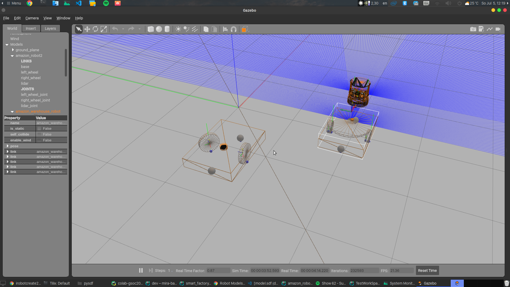

Back to the start
Issues Fixed:
PR #1 on Jderobot/CustomRobots for new gazebo model.
Week 5 + 6 blog
Going back to the drawing board
The world is constantly changing. 10 years ago, Facebook was just a new craze and Instagram didn’t exist. But as new technologies and innovations got introduced, they changed the way we do things, and so the way ROS worked.
Here is an amazing youtube video shot by Redhat explaining the origin story of ROS. I would recommend every ROS developer to watch it at least once, just to get an idea about the complexity of the project and people involved.
Coming back to our story, when I started working with the existing amazon robot gazebo model for the exercise, I realized that it is not working properly. The lift, lasers didn’t work and the model was in .sdf format. This format describes how to display the robots in Gazebo, however, it is not so friendly with other pieces of the software. The “new” way of doing things is to create different .xacro format files. This is achieved in by creating three different files
<robot>.gazebo.xacrowhich describes our robot for gazebo parameters (colours, physics, plugins for sensors etc)<robot>.transmission.xacrofor the transmissions of joints.<robot>.urdf.gazebofor describing links and joints.
Some of the tutorials that I followed:
In the beginning I was trying to update the existing robot model to match the new format. Here is the image describing old robot and the robot I was trying to modify.



Our model was static, which means it will be ignored by the physics engine. As a result the model will stay in one place and allow us to properly align all the components.
However, while working on this, I realized that the existing model needed to be updated in major way. Creating new links, setting physics properties and adding supported stuff on top of it was essential to make the exercise workable. Instead of reinventing the wheel, I thought, why not find some existing robot bases and build my model on top of it? The best way to create new stuff is to follow the best practices and so I decided to use turtlebot3_waffle_pi as the base.

Now we can use xacro publisher to publish robot states. Sweet.
After some tweaks, our initial model is ready
In order to control, we need to install ros-control ROS control packages
sudo apt-get install ros-noetic-ros-control ros-noetic-ros-controllers
sudo apt-get install ros-noetic-gazebo-ros-control
However, the robot is too small to push around big pallets of storage. To fix that, I had to make the robot 2ce bigger and had to fix wheels and other joints accordingly. I increased the friction coefficient of platform and wheels, so they grip more.
And finally, we can make prismatic joint work by publishing to a ros joint.
rostopic pub -1 /amazon_robot/joint1_position_controller/command std_msgs/Float64 "data: 1"
The new exercise is now ready to use! Have fun!
References
- Robots - Dyno 1 documentation
- samiamlabs/dyno
- Friction
- Plugin for maps from gazebo state marinaKollmitz/gazebo_ros_2Dmap_plugin
- URDF Wiki
Viszlát!